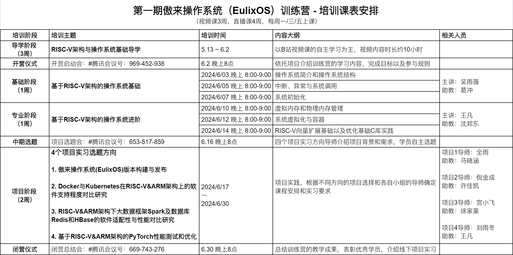
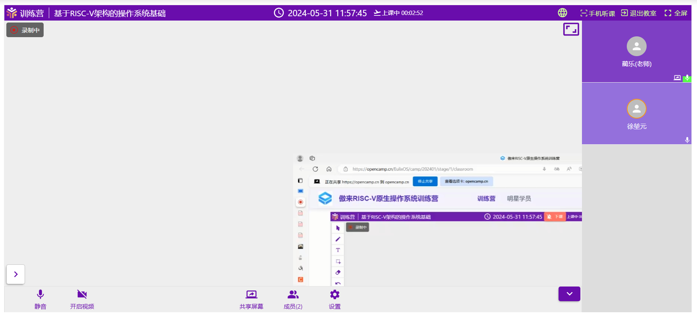
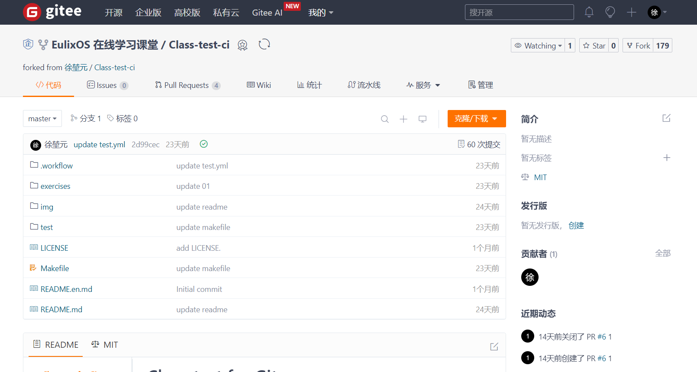
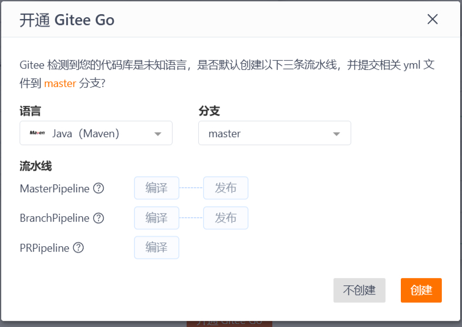

前言
介绍
傲来操作系统（EulixOS）是由中科院软件所 / 中科南京软件技术研究院团队基于 openEuler 打造的操作系统发行版，其开发目标是集成软件所的最新科研成果，面向开源爱好者、科研人员和学生，为在线服务、高性能计算、AI 计算等使用场景提供一款安全、易用的操作系统。
环境配置
为了顺利进行导学阶段的实验，为之后正式学习的实验做好准备，需要先进行一些简单的环境配置。
我们推荐在 Linux 环境下完成实验，如果不在 Linux 环境下完成实验可能会遇到部分问题，具体可参考如何在非 Linux 环境中完成实验。
配置 Git
实验的最终成绩需要提交到远程 Gitee 仓库进行评测，你需要确保本地拥有 Git。
Ubuntu/Debian 发行版安装 Git：
sudo apt install git
Arch 发行版安装 Git：
sudo pacman -Syu git
Windows 下需要安装 Git for Windows，可从如下链接安装：
https://gitforwindows.org/
在完成 Git 的安装后需要对 Git 进行基本的配置：
git config --global user.name "你的 gitee 账户名/自定义"
git config --global user.email "你的 gitee 账户默认的邮箱地址/常用邮箱地址"
配置 C 工具链
导学阶段实验由5到基础的 C 语言语法题组成，为了完成实验以及在本地进行调试，需要配置 C 工具链。
Ubuntu/Debain 发行版配置：
sudo apt install build-essential gdb #安装 GNU 工具链与调试工具
Arch 发行版配置：
sudo pacman -S base-devel gdb
Windows 需要安装 mingw 等编译工具链。
mingw 官网：https://www.mingw-w64.org/
在完成安装之后，可使用如下指令检测 gcc 是否被正确配置：
gcc --version
至此，导学阶段实验所需要的基本环境配置已完成，接下来，让我们正式进入导学阶段的学习。
导学阶段基本信息
本章节介绍导学阶段的基本信息，主要内容如下：
训练营教学系统使用引导
训练营教学系统导学阶段链接
个人信息管理

如图所示，通过右上角显示的昵称，选择个人中心，进入个人信息管理。

通过这里的编辑个人信息可以对自己的信息进行补充和修改。
注：为了确保实验成绩在排行榜上正确显示，请确保正确填写了 GitHubName/GiteeName。
如何听课

1.首先，你需要进行课程签到，如未完成签到，签到按钮会显示于红圈内“已签到”位置。
2.完成签到后可在上课时间点击“进入教室”听课，课程回放会在直播课程结束后于“学习视频”页面上架。
教室使用

进入教室时需要确保给与当前页面足够的权限。
如有需要可通过左下角聊天框向老师提问。
如发现电脑端听课不便，可通过右上角“手机听课”在手机端听课。
注：请优先使用 Chrome 浏览器听课。
成绩查看

实验的最终成绩会显示在晋级榜单页面，此处会显示排名、姓名（授课系统昵称）、学校（如在个人信息内填写）、分数与其他信息。
排行榜上显示的成绩将会作为个人晋级的依据。
组队

训练营允许且鼓励学员组队学习，组队的操作位于“组队信息页面”。关于组队的操作说明如下：
- 只有队长可以创建/解散队伍，其余队员只可加入退出。
- 包含队长在内，不少于两人的队伍为有效组队，不允许“单人成队”。
- 训练营为全员晋级的队伍的队长发放奖品作为鼓励。
- 组队情况不影响单人晋级。
导学阶段视频链接与学习引导
在导学阶段，我们使用《循序渐进，学习开发一个 RISC-V 上的操作系统》系列课程作为导学的网络课程，帮助您学习和掌握与RISC-V相关的指令、操作系统知识。
该系列课程的视频回放上传至 bilibili 上，通过访问《循序渐进，学习开发一个 RISC-V 上的操作系统 》课程录像 进行观看学习。
全部课程的课件位于码云上的《循序渐进，学习开发一个 RISC-V 上的操作系统 》课件，可以通过浏览器访问或对该仓库进行克隆。
| 编号 | 课程 | 时长 | 链接 |
|---|---|---|---|
| 1 | 导论 | 25分钟 | 链接 |
| 2 | 计算机系统漫游 | 53分钟 | 链接 |
| 3 | RISC-V ISA 介绍（上） | 36分钟 | 链接 |
| 4 | RISC-V ISA 介绍（下） | 1小时6分钟 | 链接 |
| 5 | 编译与链接 | 44分钟 | 链接 |
| 6 | 嵌入式开发介绍 | 34分钟 | 链接 |
| 7 | RISC-V 汇编编程（第一部分） | 28分钟 | 链接 |
| 8 | RISC-V 汇编编程（第二部分） | 43分钟 | 链接 |
| 9 | RISC-V 汇编编程（第三部分） | 43分钟 | 链接 |
| 10 | RISC-V 汇编编程（第四部分） | 41分钟 | 链接 |
| 11 | RISC-V 汇编编程（第五部分） | 25分钟 | 链接 |
| 12 | RISC-V 汇编编程（第六部分） | 44分钟 | 链接 |
| 13 | RISC-V 汇编编程（第七部分） | 57分钟 | 链接 |
| 14 | RISC-V 汇编编程（第八部分） | 17分钟 | 链接 |
| 15 | RVOS 介绍 | 15分钟 | 链接 |
| 16 | Hello RVOS（上） | 38分钟 | 链接 |
| 17 | Hello RVOS（下） | 57分钟 | 链接 |
| 18 | 内存管理 | 55分钟 | 链接 |
| 19 | 上下文切换与协作式多任务 | 38分钟 | 链接 |
| 20 | Trap 与 Exception | 1小时7分钟 | 链接 |
| 21 | 外部设备中断 | 42分钟 | 链接 |
| 22 | 硬件定时器 | 15分钟 | 链接 |
| 23 | 抢占式多任务 | 37分钟 | 链接 |
| 24 | 任务同步和锁 | 1小时2分钟 | 链接 |
| 25 | 软件定时器 | 32分钟 | 链接 |
| 26 | 系统调用 | 45分钟 | 链接 |
导学课程学习资料汇总
课程相关学习资料
导学阶段课程课件
riscv-operating-system-mooc/slides
此链接包含导学阶段课程《循序渐进，学习开发一个 RISC-V 上的操作系统 的全部课件，可作为视频课程的辅助之用。
课程配套实验
此链接为导学阶段课程的配套实验代码仓库，实验难度不大，适合初学者了解系统编程与操作系统理论知识，推荐尝试。
一个可运行课程实验的 RISCV CPU
此仓库为一位该课程《循序渐进，学习开发一个 RISC-V 上的操作系统 》 的热心学员设计的 RISCV CPU，可在其上运行课程配套的实验代码。
课程代码到物理机的移植记录
riscv-operating-system-mooc/issues/I64EEQ
这里记录了该课程配套代码向物理机的移植记录，鼓励大家在完成本课程后积极参与这一活动，提高自己的系统编程与工程能力。
一份来自b站本课程学员的学习笔记
RISC-V入门（基础概念+汇编部分） 基于 汪辰老师的视频笔记
其余学习资料
uCore 实验指导书
uCore 实验同样为实现一个 RISCV 架构操作系统的教学用操作系统，其难度较于导学阶段课程颇高，但是内容完善，体系严整，可作为完成课程后的提高之用。
rCore 实验指导书
rCore 实验与 uCore 实验内容基本相同，但是 rCore 代码框架使用 Rust 语言编写，欲进行实验需要先行学习 Rust，但通过本实验可以学习 Rust base OS 这一新兴技术，建议学有余力的学员进行尝试。
清华大学操作系统课程资料
此链接整合了清华大学计算机系2024春季学习操作系统课程课堂幻灯片的主要内容，对幻灯片中的一些概念进行了简单补充。
开营仪式教学安排与资料汇总
训练营开营启动会
会议时间：2024/06/02 20:00视频回放(密码：0602)
训练营开营启动会安排
-
8:00 主持人唐涵主持开场，介绍与会老师与嘉宾
-
8:02 武延军所长致辞
-
8:07 陈渝老师致辞
-
8:12 于佳耕老师致辞，介绍 RISC-V 当前生态及未来发展方向展望
-
8:27 常秉善介绍本次训练营报名及课程开设介绍
-
8:42 王凡介绍本次训练营的基础与专业阶段并分享学习经验
-
8:57 姬晨晨介绍本次训练营项目阶段的选题方向和实践
-
9:12 于佳耕老师总结寄语
-
9:15 主持人介绍组队宣传，及引导训练营问题答疑
训练营教学安排

傲来操作系统（EulixOS）官网
傲来操作系统1.0使用手册
教学系统常见问题与解决方案
1.pc 端教室画面显示异常

目前发现在 edge 浏览器中可能出现分享页面显示不全的情况，使用 Chrome 浏览器可以解决这一问题。
建议在 PC 端使用 Chrome 浏览器听课，防止出现类似问题。
2.组队页面无法自己组建队伍
一般每阶段限制每人只能加入一支队伍，如果产生类似情况请先确认自己是否加入了或已经创建了队伍，如存在类似情况，请先退出/解散当前队伍，而后重新创建。
如果不存在类似情况请确认已经登录到教学系统，如确认后依然无法创建队伍请联系管理员。
3.进入教室后发现没有声音
请确认是否正确给予了教室页面需要的权限，或检查本地设备是否正确配置，如感觉授课老师声音较小可在聊天区向老师提出。
4.晋级榜单上的成绩没有准确链接到用户信息
请确保在个人信息页面正确填写了 GitHubName/GiteeName，确认正确填写后再做一次提交便可正确链接到用户信息。
基本 Git 使用与 Gitee 流水线入门
训练营的实验基于 Gitee 平台提供的 Gitee Go 服务进行在线的评测与成绩提交，因而本章简要介绍基本的 Git 使用与 Gitee Go 服务配置，以便于大家开展实验。
常用 Git 指令
Git 是一个强大的版本控制系统，广泛应用于软件开发中。以下是一些常用的 Git 指令，它们是日常工作中不可或缺的工具。
1. 初始化仓库
git init
这个命令会在当前目录创建一个新的 Git 仓库。执行后，目录下会生成一个 .git 子目录，用于存储仓库的元数据和对象数据库。
2. 克隆仓库
git clone <repository_url>
克隆远程仓库到本地。<repository_url> 可以是 HTTPS、SSH 或 Git 协议的 URL。例如：
git clone https://gitee.com/username/repository.git
克隆完成后，你将拥有一个与远程仓库完全相同的本地副本。
3. 添加文件
git add <file>
这个命令将工作目录中的文件添加到暂存区（staging area），准备进行下一次提交。例如：
git add README.md
你也可以使用 git add . 来添加所有更改过的文件。
4. 提交更改
git commit -m "commit message"
提交暂存区的文件到本地仓库，commit message 是对这次提交的描述。例如：
git commit -m "Add initial README file"
5. 查看状态
git status
这个命令显示工作目录和暂存区的状态。你可以看到哪些文件被修改，哪些文件被添加到暂存区，以及哪些文件未被跟踪。
6. 查看提交历史
git log
这个命令显示仓库的提交历史。默认情况下，它会显示每个提交的作者、提交时间、提交信息以及提交的哈希值。
7. 推送更改
git push origin <branch_name>
这个命令将本地仓库的提交推送到远程仓库。<branch_name> 是你想要推送的分支名称。例如：
git push origin master
8. 拉取更新
git pull origin <branch_name>
这个命令从远程仓库拉取更新并尝试合并到当前分支。<branch_name> 是远程分支的名称。例如：
git pull origin develop
9. 创建分支
git branch <branch_name>
这个命令创建一个新分支，但不会自动切换到该分支。例如：
git branch feature-x
10. 切换分支
git checkout <branch_name>
这个命令切换到指定的分支。例如：
git checkout feature-x
你也可以使用 git checkout -b <branch_name> 来创建并切换到新分支。
11. 合并分支
git merge <branch_name>
将指定分支的更改合并到当前分支。
12. 删除分支
git branch -d <branch_name>
删除指定的分支。
注意，如果分支有未合并的更改，Git 会阻止你删除它。
13. 撤销更改
git checkout -- <file>
这个命令撤销对文件的本地更改，将其恢复到最后一次提交的状态。例如：
git checkout -- README.md
14. 撤销暂存区的更改
git reset HEAD <file>
将文件从暂存区移出，但保留本地更改。
15. 撤销提交
git reset --hard <commit_hash>
撤销到指定的提交，<commit_hash> 是提交的哈希值。这将重置工作目录和暂存区，使其与指定的提交完全一致。
Gitee 使用入门
Gitee 是一个基于 Git 的代码托管和协作平台，它提供了代码仓库管理、代码审查、问题跟踪、持续集成和部署等功能。以下是 Gitee 使用的一些基本步骤和技巧。
Gitee 基本功能的使用

打开某一仓库后的 Gitee 页面如上图所示
1. 注册与登录
访问 Gitee 官网，点击右上角的“注册”按钮进行账号注册。你需要提供邮箱地址、用户名和密码。注册完成后，使用你的用户名和密码登录 Gitee。
2. 创建仓库
登录后，点击页面右上角的“+”号，选择“新建仓库”。在创建仓库页面，填写仓库名称、选择仓库的可见性（公开或私有）、添加仓库描述、选择是否初始化仓库以及是否添加 README、.gitignore 和开源许可证等文件。完成设置后，点击“创建仓库”。
3. 仓库管理
在仓库页面，通过最右侧的“管理”你可以进行多种管理操作：
- 基本信息：编辑仓库的名称、描述、可见性等。
- 分支保护：设置分支保护规则，防止重要分支被错误地修改或删除。
- WebHooks：配置 WebHooks，当仓库发生特定事件（如推送代码）时，自动触发外部服务。
- 部署密钥：添加部署密钥，允许服务器无密码访问仓库。
- 成员管理：邀请其他用户加入仓库，并设置他们的权限级别。
4. 克隆仓库
在仓库页面，找到“克隆/下载”按钮，选择 HTTPS 或 SSH 方式获取仓库的 URL。然后，在本地命令行中使用 git clone 命令将仓库克隆到本地：
git clone https://gitee.com/username/repository.git
5. 提交与推送
在本地仓库进行修改后，使用以下命令将更改提交到 Gitee 仓库：
git add .
git commit -m "Update README"
git push origin master
6. 拉取更新
如果远程仓库有更新，使用 git pull 命令将更新拉取到本地：
git pull origin master
7. 分支管理
在 Gitee 仓库页面，你可以创建、删除和管理分支。在本地，使用以下命令进行分支操作：
git branch feature-x # 创建新分支
git checkout feature-x # 切换到新分支
git merge feature-x # 将 feature-x 分支合并到当前分支
git branch -d feature-x # 删除 feature-x 分支
8. 问题跟踪
在仓库页面，点击“问题”标签，然后点击“新建问题”按钮创建问题。你可以为问题添加标签、指派负责人、设置截止日期等。
9. 代码审查
在仓库页面，点击“合并请求”标签，然后点击“新建合并请求”按钮。选择源分支和目标分支，填写请求信息，然后提交。其他开发者可以审查代码并提供反馈。
10. 持续集成
在仓库页面，点击“流水线”标签，然后点击“新建流水线”按钮。配置流水线，设置触发条件、构建环境、构建脚本等。提交后，流水线将自动执行代码的构建、测试和部署。更详细的介绍会在之后讲解
11. 使用 Gitee Pages
在仓库页面，点击“服务”下的“Gitee Pages”，然后点击“启动”按钮。配置部署分支和目录，提交后，Gitee Pages 将自动部署你的静态网站。
12. 团队协作
在仓库页面，点击“管理”标签，然后选择“仓库成员管理”。你可以邀请其他用户加入仓库，并设置他们的权限，如只读、写入或管理员。
13. 使用 Gitee API
Gitee 提供了 API 文档，你可以通过 API 自动化管理仓库、问题、合并请求等。
14. 安全设置
在仓库页面，点击“管理”标签，然后选择“仓库设置”。你可以设置仓库的访问权限、分支保护规则、部署密钥等，确保仓库安全。
15. 学习资源
Gitee 提供了帮助中心，你可以在那里找到各种教程、指南和最佳实践，帮助你更好地使用 Gitee。
注：Gitee 平台的部分操作需要在完成实名认证后才能进行，请在注册账号后尽快进行实名认证。
Gitee Go 的配置与使用
Gitee Go 是 Gitee 提供的一个持续集成（CI）服务，它允许开发者自动化代码的构建、测试和部署过程。
详细信息可前往 Gitee 帮助中心查看详细文档，本文主要针对训练营实验进行引导
在进行导学阶段实验时，需要进行以下几个步骤的操作
step1-fork 模板仓库
训练营导学阶段实验仓库地址
通过右上角的 fork 按钮进行 fork 本仓库
注：fork 操作需要在实名认证后进行，请确保你的 Gitee 账户已完成实名认证
step2-开通 Gitee Go
在完成第一步后，切换到自己 fork 的仓库，点击“流水线”

点击”开通 Gitee GO“来使用 CI。

是否创建默认流水线建议选择“不创建”。
注：开通 Gitee go 后流水线页面显示无流水线为正常现象
此后每次向远程仓库的 master 分支进行 push 都会触发流水线进行评测
流水线常见问题与解决方案
1.在开通 Gitee Go 并向仓库 push 代码后流水线不执行
- 首先，检查当前仓库的流水线时间是否耗尽。
- 确定有时间，那么在流水线页面根据实验中的流水线配置代码手动创建新流水线，配置文件位于
.workflow/test.yml。 - 如果依然不行，那么尝试修改配置文件中的作业名称或阶段名称。
- 如果依然不行，尝试重新 fork 仓库。
- 如果依然无法解决，尝试根据当前仓库内容，手动创建新仓库（不进行 fork 操作）。
2.在开通 Gitee Go 时不小心创建了默认流水线。
默认流水线的运行不会影响评测流水线的运行，但是会消耗时间，可以在流水线页面手动将其删除，评测流水线的默认名称为“test”。
3.仓库流水线时间耗尽怎么办
最简单的解决方案，再 fork 一个仓库。
4.流水线时间运行过长怎么办
可以手动终止运行，而后查看流水线日志确定原因，理论上讲单次流水线运行时间不应超过半个小时。
5.流水线日志无法生成
使用手机或者其他浏览器查看试试。
前置知识
本章介绍完成实验所需的部分前置知识。
Linux 使用入门与配置
C 语言基本语法
make 基本使用与 Makefile
如何在非 Linux 环境中完成实验
开始实验
本章我们将正式开始进行实验。
实验代码框架讲解
本地测试流程
实验相关资料汇总
导学阶段实验相关问题与解决方案
提交成绩
经过上一章的学习与讲解，相信大家都已经顺利完成了，本章将会引导大家提交实验的成绩。
流水线测试过程
排行榜成绩查看与绑定
如何晋级
提交过程相关问题与解决方案
晋级之后
经过之前的学习，相信大家已经完成了导学阶段的学习与晋级要求，本章将引导大家在下一阶段正式开始之前的余下时间可以拓展的内容，以及对后续学习的引导。